Prediction
Chapter 5: Prediction
Section 4.1: Predicting Election Outcomes
Section 4.1.1: Loops in R
values <- c(2, 4, 6)
n <- length(values) # number of elements in `values'
results <- rep(NA, n) # empty container vector for storing the results
## loop counter `i' will take values on 1, 2, ..., n in that order
for (i in 1:n) {
## store the result of multiplication as the ith element of
## `results' vector
results[i] <- values[i] * 2
cat(values[i], "times 2 is equal to", results[i], "\n")
}## 2 times 2 is equal to 4
## 4 times 2 is equal to 8
## 6 times 2 is equal to 12results## [1] 4 8 12## check if the code runs when i = 1
i <- 1
x <- values[i] * 2
cat(values[i], "times 2 is equal to", x, "\n")## 2 times 2 is equal to 4Section 4.1.2: General Conditional Statements in R
## define the operation to be executed
operation <- "add"
if (operation == "add") {
cat("I will perform addition 4 + 4\n")
4 + 4
}## I will perform addition 4 + 4## [1] 8if (operation == "multiply") {
cat("I will perform multiplication 4 * 4\n")
4 * 4
}
## Note that `operation' is redefined
operation <- "multiply"
if (operation == "add") {
cat("I will perform addition 4 + 4")
4 + 4
} else {
cat("I will perform multiplication 4 * 4")
4 * 4
}## I will perform multiplication 4 * 4## [1] 16## Note that `operation' is redefined
operation <- "subtract"
if (operation == "add") {
cat("I will perform addition 4 + 4\n")
4 + 4
} else if (operation == "multiply") {
cat("I will perform multiplication 4 * 4\n")
4 * 4
} else {
cat("`", operation, "' is invalid. Use either `add' or `multiply'.\n",
sep = "")
}## `subtract' is invalid. Use either `add' or `multiply'.values <- 1:5
n <- length(values)
results <- rep(NA, n)
for (i in 1:n) {
## x and r get overwritten in each iteration
x <- values[i]
r <- x %% 2 # remainder when divided by 2 to check whether even or odd
if (r == 0) { # remainder is zero
cat(x, "is even and I will perform addition",
x, "+", x, "\n")
results[i] <- x + x
} else { # remainder is not zero
cat(x, "is odd and I will perform multiplication",
x, "*", x, "\n")
results[i] <- x * x
}
}## 1 is odd and I will perform multiplication 1 * 1
## 2 is even and I will perform addition 2 + 2
## 3 is odd and I will perform multiplication 3 * 3
## 4 is even and I will perform addition 4 + 4
## 5 is odd and I will perform multiplication 5 * 5results## [1] 1 4 9 8 25Section 4.1.3: Poll Predictions
## load election results, by state
data("pres08", package = "qss")
## load polling data
data("polls08", package = "qss")
## compute Obama's margin
polls08$margin <- polls08$Obama - polls08$McCain
pres08$margin <- pres08$Obama - pres08$McCain
x <- as.Date("2008-11-04")
y <- as.Date("2008/9/1")
x - y # number of days between 2008/9/1 and 11/4## Time difference of 64 days## convert to a Date object
polls08$middate <- as.Date(polls08$middate)
## computer the number of days to the election day
polls08$DaysToElection <- as.Date("2008-11-04") - polls08$middate
poll.pred <- rep(NA, 51) # initialize a vector place holder
## extract unique state names which the loop will iterate through
st.names <- unique(polls08$state)
## add state names as labels for easy interpretation later on
names(poll.pred) <- as.character(st.names)
## loop across 50 states plus DC
for (i in 1:51){
## subset the ith state
state.data <- subset(polls08, subset = (state == st.names[i]))
## further subset the latest polls within the state
latest <- subset(state.data, DaysToElection == min(DaysToElection))
## compute the mean of latest polls and store it
poll.pred[i] <- mean(latest$margin)
}
## error of latest polls
errors <- pres08$margin - poll.pred
names(errors) <- st.names # add state names
mean(errors) # mean prediction error## [1] 1.062092sqrt(mean(errors^2))## [1] 5.90894par(cex = 1.5)
## histogram
hist(errors, freq = FALSE, ylim = c(0, 0.08),
main = "Poll prediction error",
xlab = "Error in predicted margin for Obama (percentage points)")
## add mean
abline(v = mean(errors), lty = "dashed", col = "red")
text(x = -7, y = 0.07, "average error", col = "red")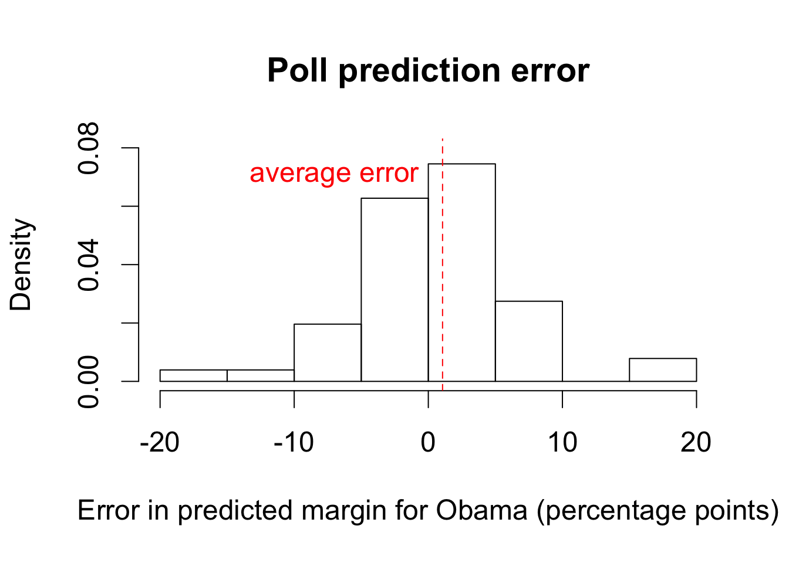
par(cex = 1.5)
## type = "n" generates "empty" plot
plot(poll.pred, pres08$margin, type = "n", main = "", xlab = "Poll results",
xlim = c(-40, 90), ylim = c(-40, 90), ylab = "Actual election results")
## add state abbreviations
text(x = poll.pred, y = pres08$margin, labels = pres08$state, col = "blue")
## lines
abline(a = 0, b = 1, lty = "dashed") # 45 degree line
abline(v = 0) # vertical line at 0
abline(h = 0) # horizontal line at 0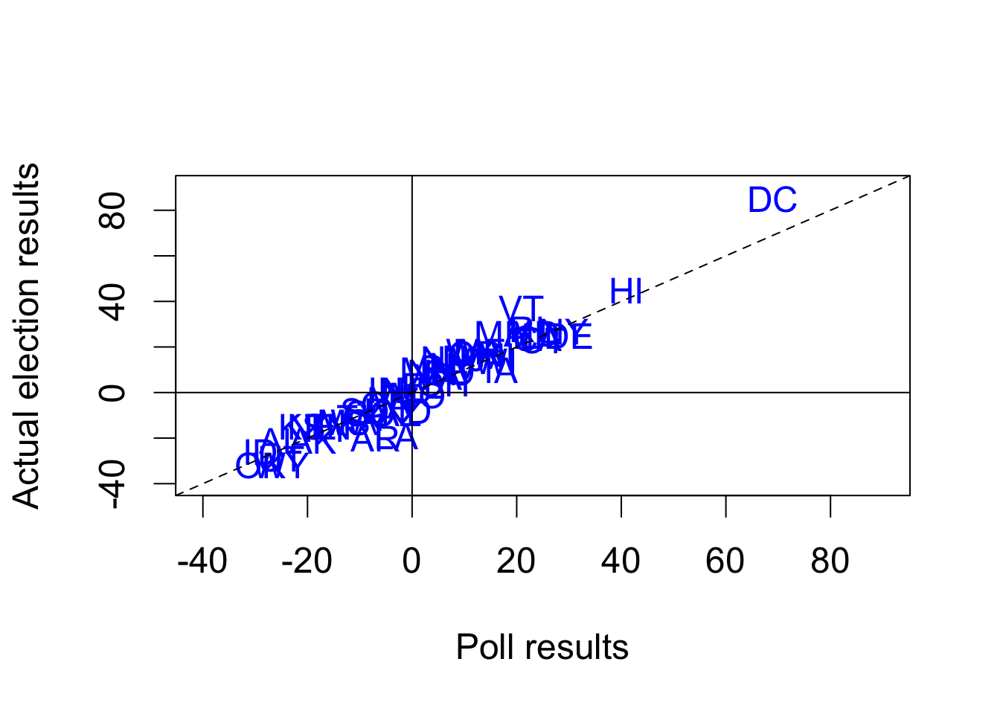
## which state polls called wrong?
pres08$state[sign(poll.pred) != sign(pres08$margin)]## [1] "IN" "MO" "NC"## what was the actual margin for these states?
pres08$margin[sign(poll.pred) != sign(pres08$margin)]## [1] 1 -1 1## actual results: total number of electoral votes won by Obama
sum(pres08$EV[pres08$margin > 0])## [1] 364## poll prediction
sum(pres08$EV[poll.pred > 0])## [1] 349## load the data
data("pollsUS08", package = "qss")
## compute number of days to the election as before
pollsUS08$middate <- as.Date(pollsUS08$middate)
pollsUS08$DaysToElection <- as.Date("2008-11-04") - pollsUS08$middate
## empty vectors to store predictions
Obama.pred <- McCain.pred <- rep(NA, 90)
for (i in 1:90) {
## take all polls conducted within the past 7 days
week.data <- subset(pollsUS08, subset = ((DaysToElection <= (90 - i + 7))
& (DaysToElection > (90 - i))))
## compute support for each candidate using the average
Obama.pred[i] <- mean(week.data$Obama)
McCain.pred[i] <- mean(week.data$McCain)
}
par(cex = 1.5)
## plot going from 90 days to 1 day before the election
plot(90:1, Obama.pred, type = "b", xlim = c(90, 0), ylim = c(40, 60),
col = "blue", xlab = "Days to the election",
ylab = "Support for candidate (percentage points)")
## `type = "b"' gives plot that includes both points and lines
lines(90:1, McCain.pred, type = "b", col = "red")
## actual election results: pch = 19 gives solid circles
points(0, 52.93, pch = 19, col = "blue")
points(0, 45.65, pch = 19, col = "red")
## line indicating the election day
abline(v = 0)
## labeling candidates
text(80, 48, "Obama", col = "blue")
text(80, 41, "McCain", col = "red")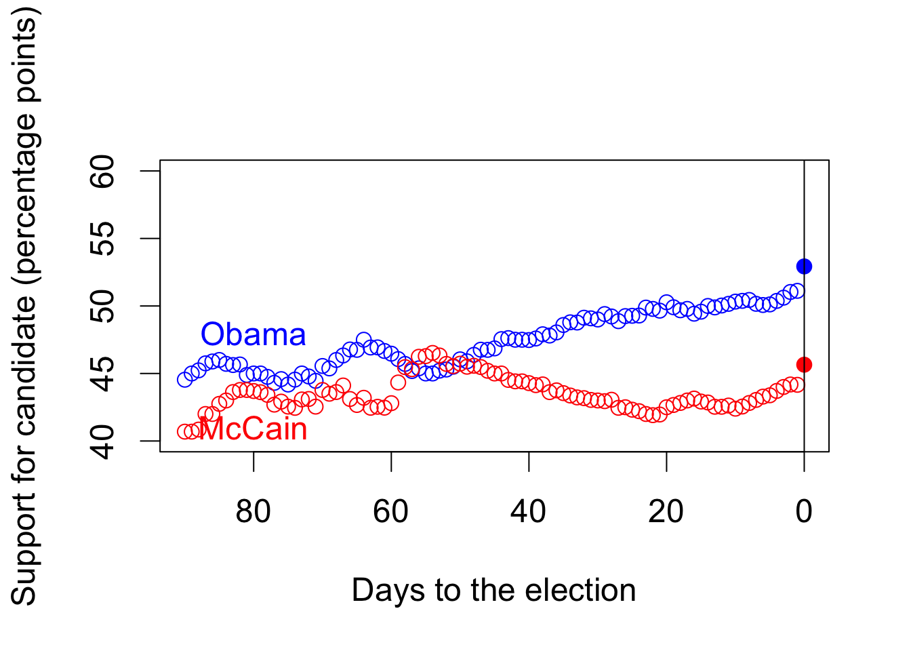
Section 4.2: Linear Regression
Section 4.2.1: Facial Appearance and Election Outcomes
## load the data
data("face", package = "qss")
## two-party vote share for Democrats and Republicans
face$d.share <- face$d.votes / (face$d.votes + face$r.votes)
face$r.share <- face$r.votes / (face$d.votes + face$r.votes)
face$diff.share <- face$d.share - face$r.share
par(cex = 1.5)
plot(face$d.comp, face$diff.share, pch = 16,
col = ifelse(face$w.party == "R", "red", "blue"),
xlim = c(0, 1), ylim = c(-1, 1),
xlab = "Competence scores for Democrats",
ylab = "Democratic margin in vote share",
main = "Facial competence and vote share")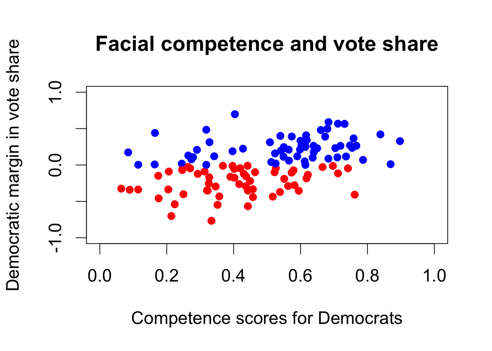
Section 4.2.3: Least Squares
fit <- lm(diff.share ~ d.comp, data = face) # fit the model
fit##
## Call:
## lm(formula = diff.share ~ d.comp, data = face)
##
## Coefficients:
## (Intercept) d.comp
## -0.3122 0.6604## lm(face$diff.share ~ face$d.comp)
coef(fit) # get estimated coefficients## (Intercept) d.comp
## -0.3122259 0.6603815head(fitted(fit)) # get fitted or predicted values## 1 2 3 4 5 6
## 0.06060411 -0.08643340 0.09217061 0.04539236 0.13698690 -0.10057206plot(face$d.comp, face$diff.share, xlim = c(0, 1.05), ylim = c(-1,1),
xlab = "Competence scores for Democrats",
ylab = "Democratic margin in vote share",
main = "Facial competence and vote share")
abline(fit) # add regression line
abline(v = 0, lty = "dashed")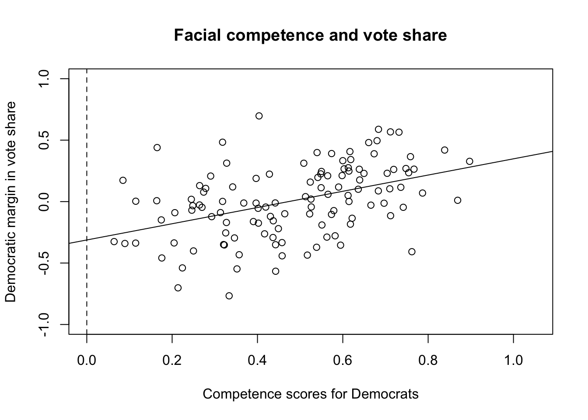
epsilon.hat <- resid(fit) # residuals
sqrt(mean(epsilon.hat^2)) # RMSE## [1] 0.2642361Section 4.2.5: Merging Data Sets in R
data("pres12", package = "qss") # load 2012 data
## quick look at two data sets
head(pres08)| state.name | state | Obama | McCain | EV | margin |
|---|---|---|---|---|---|
| Alabama | AL | 39 | 60 | 9 | -21 |
| Alaska | AK | 38 | 59 | 3 | -21 |
| Arizona | AZ | 45 | 54 | 10 | -9 |
| Arkansas | AR | 39 | 59 | 6 | -20 |
| California | CA | 61 | 37 | 55 | 24 |
| Colorado | CO | 54 | 45 | 9 | 9 |
head(pres12)| state | Obama | Romney | EV |
|---|---|---|---|
| AL | 38 | 61 | 9 |
| AK | 41 | 55 | 3 |
| AZ | 45 | 54 | 11 |
| AR | 37 | 61 | 6 |
| CA | 60 | 37 | 55 |
| CO | 51 | 46 | 9 |
## merge two data frames
pres <- merge(pres08, pres12, by = "state")
## summarize the merged data frame
summary(pres)| state | state.name | Obama.x | McCain | EV.x | margin | Obama.y | Romney | EV.y | |
|---|---|---|---|---|---|---|---|---|---|
| Length:51 | Length:51 | Min. :33.00 | Min. : 7.00 | Min. : 3.00 | Min. :-32.000 | Min. :25.00 | Min. : 7.00 | Min. : 3.00 | |
| Class :character | Class :character | 1st Qu.:43.00 | 1st Qu.:40.00 | 1st Qu.: 4.50 | 1st Qu.:-13.000 | 1st Qu.:40.50 | 1st Qu.:41.00 | 1st Qu.: 4.50 | |
| Mode :character | Mode :character | Median :51.00 | Median :47.00 | Median : 8.00 | Median : 4.000 | Median :51.00 | Median :48.00 | Median : 8.00 | |
| NA | NA | Mean :51.37 | Mean :47.06 | Mean :10.55 | Mean : 4.314 | Mean :49.06 | Mean :49.04 | Mean :10.55 | |
| NA | NA | 3rd Qu.:57.50 | 3rd Qu.:56.00 | 3rd Qu.:11.50 | 3rd Qu.: 17.500 | 3rd Qu.:56.00 | 3rd Qu.:58.00 | 3rd Qu.:11.50 | |
| NA | NA | Max. :92.00 | Max. :66.00 | Max. :55.00 | Max. : 85.000 | Max. :91.00 | Max. :73.00 | Max. :55.00 |
## change the variable name for illustration
names(pres12)[1] <- "state.abb"
## merging data sets using the variables of different names
pres <- merge(pres08, pres12, by.x = "state", by.y = "state.abb")
summary(pres)| state | state.name | Obama.x | McCain | EV.x | margin | Obama.y | Romney | EV.y | |
|---|---|---|---|---|---|---|---|---|---|
| Length:51 | Length:51 | Min. :33.00 | Min. : 7.00 | Min. : 3.00 | Min. :-32.000 | Min. :25.00 | Min. : 7.00 | Min. : 3.00 | |
| Class :character | Class :character | 1st Qu.:43.00 | 1st Qu.:40.00 | 1st Qu.: 4.50 | 1st Qu.:-13.000 | 1st Qu.:40.50 | 1st Qu.:41.00 | 1st Qu.: 4.50 | |
| Mode :character | Mode :character | Median :51.00 | Median :47.00 | Median : 8.00 | Median : 4.000 | Median :51.00 | Median :48.00 | Median : 8.00 | |
| NA | NA | Mean :51.37 | Mean :47.06 | Mean :10.55 | Mean : 4.314 | Mean :49.06 | Mean :49.04 | Mean :10.55 | |
| NA | NA | 3rd Qu.:57.50 | 3rd Qu.:56.00 | 3rd Qu.:11.50 | 3rd Qu.: 17.500 | 3rd Qu.:56.00 | 3rd Qu.:58.00 | 3rd Qu.:11.50 | |
| NA | NA | Max. :92.00 | Max. :66.00 | Max. :55.00 | Max. : 85.000 | Max. :91.00 | Max. :73.00 | Max. :55.00 |
## cbinding two data frames
pres1 <- cbind(pres08, pres12)
## this shows all variables are kept
summary(pres1)| state.name | state | Obama | McCain | EV | margin | state.abb | Obama | Romney | EV | |
|---|---|---|---|---|---|---|---|---|---|---|
| Length:51 | Length:51 | Min. :33.00 | Min. : 7.00 | Min. : 3.00 | Min. :-32.000 | Length:51 | Min. :25.00 | Min. : 7.00 | Min. : 3.00 | |
| Class :character | Class :character | 1st Qu.:43.00 | 1st Qu.:40.00 | 1st Qu.: 4.50 | 1st Qu.:-13.000 | Class :character | 1st Qu.:40.50 | 1st Qu.:41.00 | 1st Qu.: 4.50 | |
| Mode :character | Mode :character | Median :51.00 | Median :47.00 | Median : 8.00 | Median : 4.000 | Mode :character | Median :51.00 | Median :48.00 | Median : 8.00 | |
| NA | NA | Mean :51.37 | Mean :47.06 | Mean :10.55 | Mean : 4.314 | NA | Mean :49.06 | Mean :49.04 | Mean :10.55 | |
| NA | NA | 3rd Qu.:57.50 | 3rd Qu.:56.00 | 3rd Qu.:11.50 | 3rd Qu.: 17.500 | NA | 3rd Qu.:56.00 | 3rd Qu.:58.00 | 3rd Qu.:11.50 | |
| NA | NA | Max. :92.00 | Max. :66.00 | Max. :55.00 | Max. : 85.000 | NA | Max. :91.00 | Max. :73.00 | Max. :55.00 |
## DC and DE are flipped in this alternative approach
pres1[8:9, ]| state.name | state | Obama | McCain | EV | margin | state.abb | Obama | Romney | EV | |
|---|---|---|---|---|---|---|---|---|---|---|
| 8 | D.C. | DC | 92 | 7 | 3 | 85 | DE | 59 | 40 | 3 |
| 9 | Delaware | DE | 62 | 37 | 3 | 25 | DC | 91 | 7 | 3 |
## merge() does not have this problem
pres[8:9, ]| state | state.name | Obama.x | McCain | EV.x | margin | Obama.y | Romney | EV.y | |
|---|---|---|---|---|---|---|---|---|---|
| 8 | DC | D.C. | 92 | 7 | 3 | 85 | 91 | 7 | 3 |
| 9 | DE | Delaware | 62 | 37 | 3 | 25 | 59 | 40 | 3 |
pres$Obama2008.z <- scale(pres$Obama.x)
pres$Obama2012.z <- scale(pres$Obama.y)
## intercept is estimated essentially zero
fit1 <- lm(Obama2012.z ~ Obama2008.z, data = pres)
fit1##
## Call:
## lm(formula = Obama2012.z ~ Obama2008.z, data = pres)
##
## Coefficients:
## (Intercept) Obama2008.z
## -3.521e-17 9.834e-01## regression without an intercept; estimated slope is identical
fit1 <- lm(Obama2012.z ~ -1 + Obama2008.z, data = pres)
fit1##
## Call:
## lm(formula = Obama2012.z ~ -1 + Obama2008.z, data = pres)
##
## Coefficients:
## Obama2008.z
## 0.9834par(cex = 1.5)
plot(pres$Obama2008.z, pres$Obama2012.z, xlim = c(-4, 4), ylim = c(-4, 4),
xlab = "Obama's standardized vote share in 2008",
ylab = "Obama's standardized vote share in 2012")
abline(fit1) # draw a regression line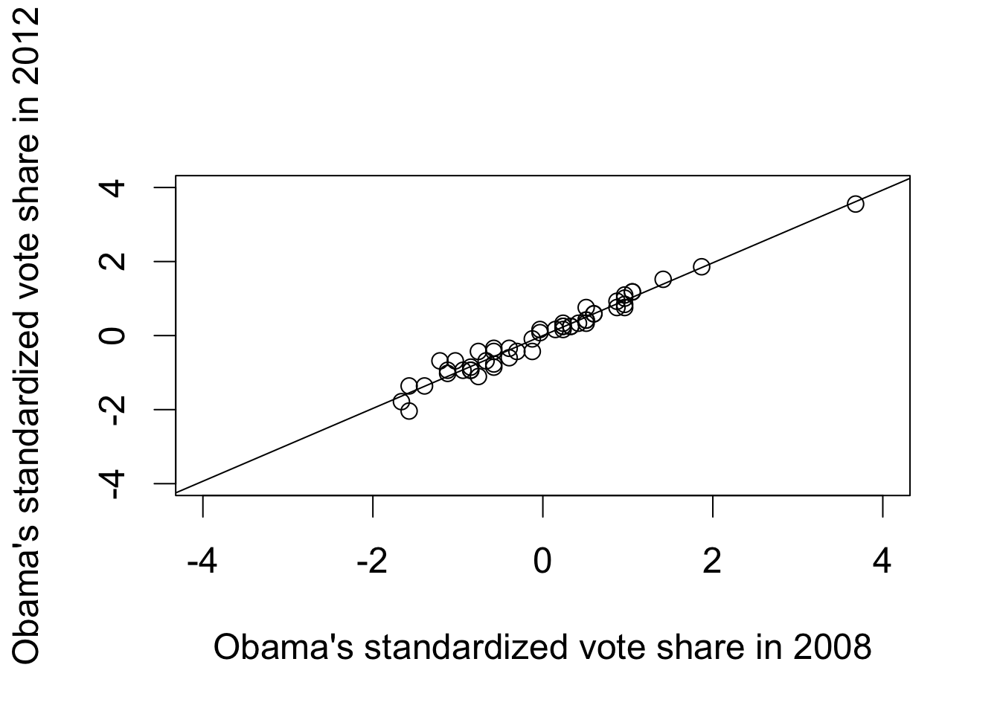
## bottom quartile
mean((pres$Obama2012.z >
pres$Obama2008.z)[pres$Obama2008.z
<= quantile(pres$Obama2008.z, 0.25)])## [1] 0.5714286## top quartile
mean((pres$Obama2012.z >
pres$Obama2008.z)[pres$Obama2008.z
>= quantile(pres$Obama2008.z, 0.75)])## [1] 0.4615385Section 4.2.6: Model Fit
data("florida", package = "qss")
## regress Buchanan's 2000 votes on Perot's 1996 votes
fit2 <- lm(Buchanan00 ~ Perot96, data = florida)
fit2##
## Call:
## lm(formula = Buchanan00 ~ Perot96, data = florida)
##
## Coefficients:
## (Intercept) Perot96
## 1.34575 0.03592## compute TSS (total sum of squares) and SSR (sum of squared residuals)
TSS2 <- sum((florida$Buchanan00 - mean(florida$Buchanan00))^2)
SSR2 <- sum(resid(fit2)^2)
## Coefficient of determination
(TSS2 - SSR2) / TSS2## [1] 0.5130333R2 <- function(fit) {
resid <- resid(fit) # residuals
y <- fitted(fit) + resid # outcome variable
TSS <- sum((y - mean(y))^2)
SSR <- sum(resid^2)
R2 <- (TSS - SSR) / TSS
return(R2)
}
R2(fit2)## [1] 0.5130333## built-in R function
summary(fit2)$r.squared## [1] 0.5130333R2(fit1)## [1] 0.9671579par(cex = 1.5)
plot(fitted(fit2), resid(fit2), xlim = c(0, 1500), ylim = c(-750, 2500),
xlab = "Fitted values", ylab = "Residuals")
abline(h = 0)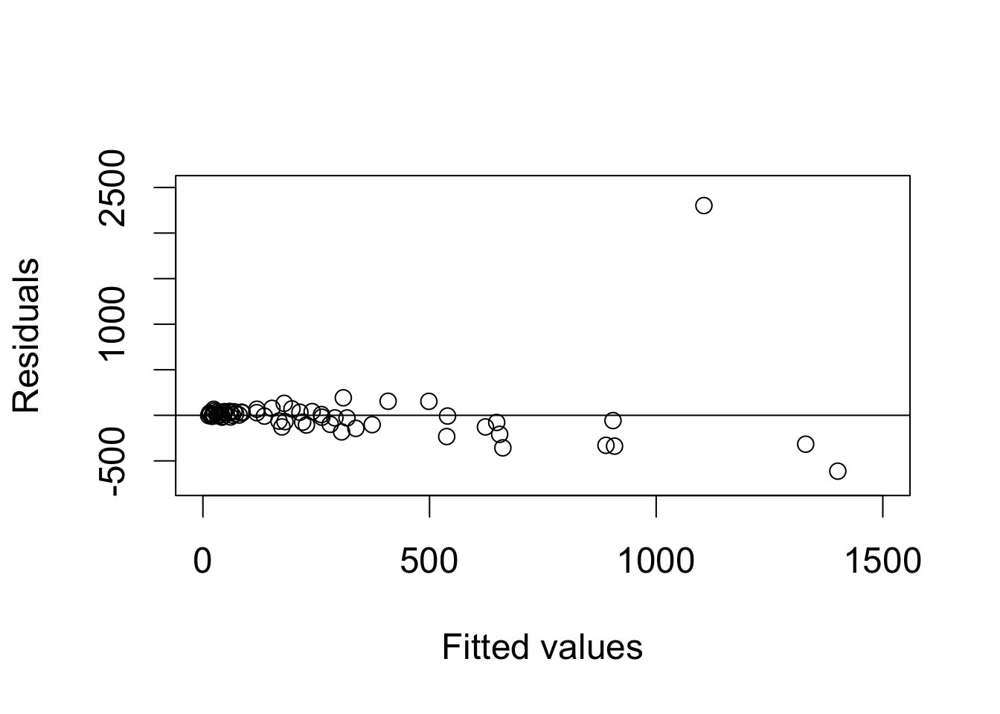
florida$county[resid(fit2) == max(resid(fit2))]## [1] "PalmBeach"## data without Palm Beach
florida.pb <- subset(florida, subset = (county != "PalmBeach"))
fit3 <- lm(Buchanan00 ~ Perot96, data = florida.pb)
fit3##
## Call:
## lm(formula = Buchanan00 ~ Perot96, data = florida.pb)
##
## Coefficients:
## (Intercept) Perot96
## 45.84193 0.02435## R^2 or coefficient of determination
R2(fit3)## [1] 0.8511675par(cex = 1.5)
## residual plot
plot(fitted(fit3), resid(fit3), xlim = c(0, 1500), ylim = c(-750, 2500),
xlab = "Fitted values", ylab = "Residuals",
main = "Residual plot without Palm Beach")
abline(h = 0) # horizontal line at 0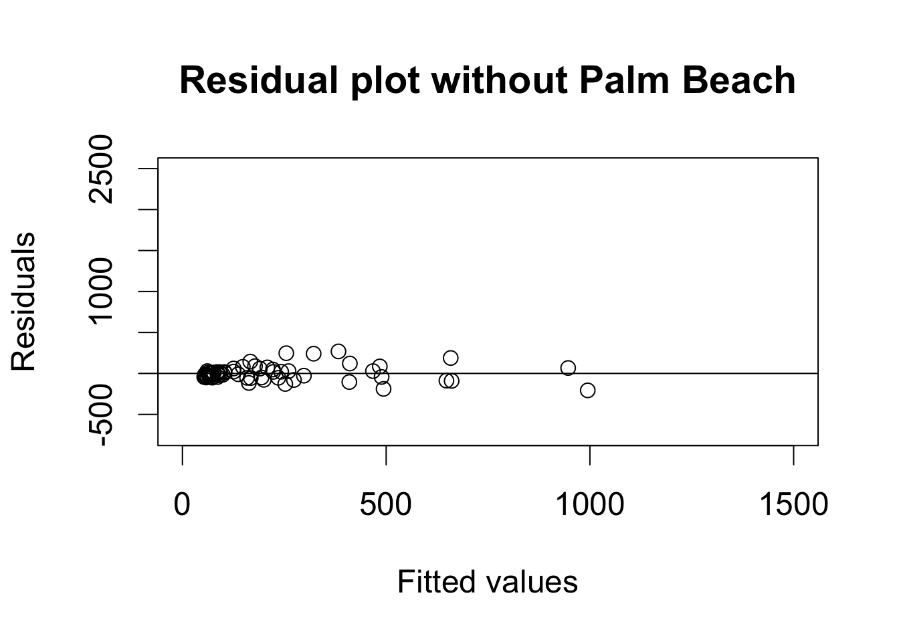
plot(florida$Perot96, florida$Buchanan00, xlab = "Perot's votes in 1996",
ylab = "Buchanan's votes in 2000")
abline(fit2, lty = "dashed") # regression with Palm Beach
abline(fit3) # regression without Palm Beach
text(30000, 3250, "Palm Beach")
text(30000, 1500, "regression\n with Palm Beach")
text(30000, 400, "regression\n without Palm Beach")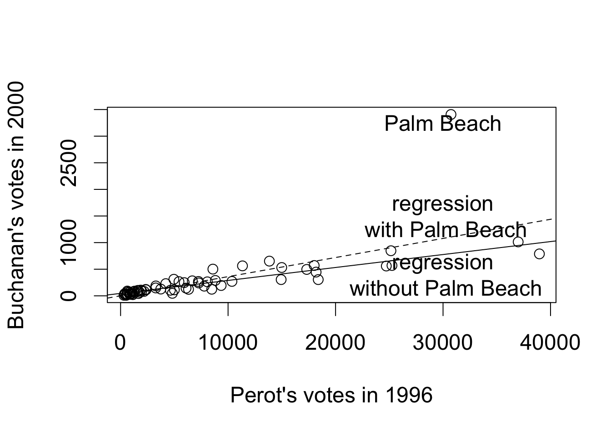
Section 4.3: Regression and Causation
Section 4.3.1: Randomized Experiments
data("women", package = "qss")
## proportion of female politicians in reserved GP vs. unreserved GP
mean(women$female[women$reserved == 1])## [1] 1mean(women$female[women$reserved == 0])## [1] 0.07476636## drinking-water facilities
mean(women$water[women$reserved == 1]) -
mean(women$water[women$reserved == 0])## [1] 9.252423## irrigation facilities
mean(women$irrigation[women$reserved == 1]) -
mean(women$irrigation[women$reserved == 0])## [1] -0.3693319lm(water ~ reserved, data = women)##
## Call:
## lm(formula = water ~ reserved, data = women)
##
## Coefficients:
## (Intercept) reserved
## 14.738 9.252lm(irrigation ~ reserved, data = women)##
## Call:
## lm(formula = irrigation ~ reserved, data = women)
##
## Coefficients:
## (Intercept) reserved
## 3.3879 -0.3693Section 4.3.2: Regression with Multiple Predictors
data("social", package = "qss")
levels(social$messages) # base level is `Civic'## NULLfit <- lm(primary2006 ~ messages, data = social)
fit##
## Call:
## lm(formula = primary2006 ~ messages, data = social)
##
## Coefficients:
## (Intercept) messagesControl messagesHawthorne
## 0.314538 -0.017899 0.007837
## messagesNeighbors
## 0.063411## ## create indicator variables
## social$Control <- ifelse(social$messages == "Control", 1, 0)
## social$Hawthorne <- ifelse(social$messages == "Hawthorne", 1, 0)
## social$Neighbors <- ifelse(social$messages == "Neighbors", 1, 0)
## ## fit the same regression as above by directly using indicator variables
## lm(primary2006 ~ Control + Hawthorne + Neighbors, data = social)
## create a data frame with unique values of `messages'
unique.messages <- data.frame(messages = unique(social$messages))
unique.messagesmessages
Civic Duty Hawthorne
Control
Neighbors
## make prediction for each observation from this new data frame
predict(fit, newdata = unique.messages)## 1 2 3 4
## 0.3145377 0.3223746 0.2966383 0.3779482## sample average
tapply(social$primary2006, social$messages, mean)## Civic Duty Control Hawthorne Neighbors
## 0.3145377 0.2966383 0.3223746 0.3779482## linear regression without intercept
fit.noint <- lm(primary2006 ~ -1 + messages, data = social)
fit.noint##
## Call:
## lm(formula = primary2006 ~ -1 + messages, data = social)
##
## Coefficients:
## messagesCivic Duty messagesControl messagesHawthorne
## 0.3145 0.2966 0.3224
## messagesNeighbors
## 0.3779## estimated average effect of `Neighbors' condition
coef(fit)["messagesNeighbors"] - coef(fit)["messagesControl"]## messagesNeighbors
## 0.08130991## difference in means
mean(social$primary2006[social$messages == "Neighbors"]) -
mean(social$primary2006[social$messages == "Control"])## [1] 0.08130991## adjusted Rsquare
adjR2 <- function(fit) {
resid <- resid(fit) # residuals
y <- fitted(fit) + resid # outcome
n <- length(y)
TSS.adj <- sum((y - mean(y))^2) / (n - 1)
SSR.adj <- sum(resid^2) / (n - length(coef(fit)))
R2.adj <- 1 - SSR.adj / TSS.adj
return(R2.adj)
}
adjR2(fit)## [1] 0.003272788R2(fit) # unadjusted Rsquare calculation## [1] 0.003282564summary(fit)$adj.r.squared## [1] 0.003272788Section 4.3.3: Heterogenous Treatment Effects
## average treatment effect (ate) among those who voted in 2004 primary
social.voter <- subset(social, primary2004 == 1)
ate.voter <-
mean(social.voter$primary2006[social.voter$messages == "Neighbors"]) -
mean(social.voter$primary2006[social.voter$messages == "Control"])
ate.voter## [1] 0.09652525## average effect among those who did not vote
social.nonvoter <- subset(social, primary2004 == 0)
ate.nonvoter <-
mean(social.nonvoter$primary2006[social.nonvoter$messages == "Neighbors"]) -
mean(social.nonvoter$primary2006[social.nonvoter$messages == "Control"])
ate.nonvoter## [1] 0.06929617## difference
ate.voter - ate.nonvoter## [1] 0.02722908## subset neighbors and control groups
social.neighbor <- subset(social, (messages == "Control") |
(messages == "Neighbors"))
## standard way to generate main and interaction effects
fit.int <- lm(primary2006 ~ primary2004 + messages + primary2004:messages,
data = social.neighbor)
fit.int##
## Call:
## lm(formula = primary2006 ~ primary2004 + messages + primary2004:messages,
## data = social.neighbor)
##
## Coefficients:
## (Intercept) primary2004
## 0.23711 0.14870
## messagesNeighbors primary2004:messagesNeighbors
## 0.06930 0.02723## lm(primary2006 ~ primary2004 * messages, data = social.neighbor)
social.neighbor$age <- 2008 - social.neighbor$yearofbirth
summary(social.neighbor$age)| Min. | 1st Qu. | Median | Mean | 3rd Qu. | Max. |
|---|---|---|---|---|---|
| 22 | 43 | 52 | 51.82 | 61 | 108 |
fit.age <- lm(primary2006 ~ age * messages, data = social.neighbor)
fit.age##
## Call:
## lm(formula = primary2006 ~ age * messages, data = social.neighbor)
##
## Coefficients:
## (Intercept) age messagesNeighbors
## 0.0894768 0.0039982 0.0485728
## age:messagesNeighbors
## 0.0006283## age = 25, 45, 65, 85 in Neighbors group
age.neighbor <- data.frame(age = seq(from = 25, to = 85, by = 20),
messages = "Neighbors")
## age = 25, 45, 65, 85 in Control group
age.control <- data.frame(age = seq(from = 25, to = 85, by = 20),
messages = "Control")
## average treatment effect for age = 25, 45, 65, 85
ate.age <- predict(fit.age, newdata = age.neighbor) -
predict(fit.age, newdata = age.control)
ate.age## 1 2 3 4
## 0.06428051 0.07684667 0.08941283 0.10197899fit.age2 <- lm(primary2006 ~ age + I(age^2) + messages + age:messages +
I(age^2):messages, data = social.neighbor)
fit.age2##
## Call:
## lm(formula = primary2006 ~ age + I(age^2) + messages + age:messages +
## I(age^2):messages, data = social.neighbor)
##
## Coefficients:
## (Intercept) age
## -9.700e-02 1.172e-02
## I(age^2) messagesNeighbors
## -7.389e-05 -5.275e-02
## age:messagesNeighbors I(age^2):messagesNeighbors
## 4.804e-03 -3.961e-05## predicted turnout rate under the ``Neighbors'' treatment condition
yT.hat <- predict(fit.age2,
newdata = data.frame(age = 25:85, messages = "Neighbors"))
## predicted turnout rate under the control condition
yC.hat <- predict(fit.age2,
newdata = data.frame(age = 25:85, messages = "Control"))
par(cex = 1.5)
## plotting the predicted turnout rate under each condition
plot(x = 25:85, y = yT.hat, type = "l", xlim = c(20, 90), ylim = c(0, 0.5),
xlab = "Age", ylab = "Predicted turnout rate")
lines(x = 25:85, y = yC.hat, lty = "dashed")
text(40, 0.45, "Neighbors condition")
text(45, 0.15, "Control condition")
## plotting the average treatment effect as a function of age
plot(x = 25:85, y = yT.hat - yC.hat, type = "l", xlim = c(20, 90),
ylim = c(0, 0.1), xlab = "Age",
ylab = "Estimated average treatment effect")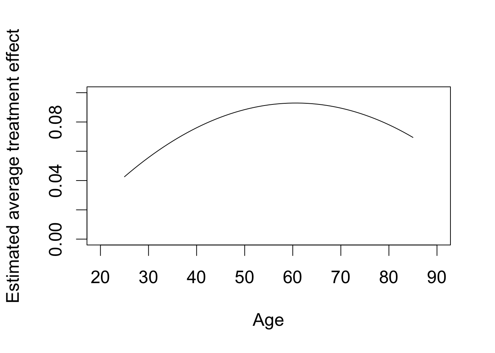
Section 4.3.4: Regression Discontinuity Design
## load the data and subset them into two parties
data("MPs", package = "qss")
MPs.labour <- subset(MPs, subset = (party == "labour"))
MPs.tory <- subset(MPs, subset = (party == "tory"))
## two regressions for Labour: negative and positive margin
labour.fit1 <- lm(ln.net ~ margin,
data = MPs.labour[MPs.labour$margin < 0, ])
labour.fit2 <- lm(ln.net ~ margin,
data = MPs.labour[MPs.labour$margin > 0, ])
## two regressions for Tory: negative and positive margin
tory.fit1 <- lm(ln.net ~ margin, data = MPs.tory[MPs.tory$margin < 0, ])
tory.fit2 <- lm(ln.net ~ margin, data = MPs.tory[MPs.tory$margin > 0, ])
## Labour: range of predictions
y1l.range <- c(min(MPs.labour$margin), 0) # min to 0
y2l.range <- c(0, max(MPs.labour$margin)) # 0 to max
## prediction
y1.labour <- predict(labour.fit1, newdata = data.frame(margin = y1l.range))
y2.labour <- predict(labour.fit2, newdata = data.frame(margin = y2l.range))
## Tory: range of predictions
y1t.range <- c(min(MPs.tory$margin), 0) # min to 0
y2t.range <- c(0, max(MPs.tory$margin)) # 0 to max
## predict outcome
y1.tory <- predict(tory.fit1, newdata = data.frame(margin = y1t.range))
y2.tory <- predict(tory.fit2, newdata = data.frame(margin = y2t.range))
par(cex = 1.5)
## scatterplot with regression lines for labour
plot(MPs.labour$margin, MPs.labour$ln.net, main = "Labour",
xlim = c(-0.5, 0.5), ylim = c(6, 18), xlab = "Margin of victory",
ylab = "log net wealth at death")
abline(v = 0, lty = "dashed")
## add regression lines
lines(y1l.range, y1.labour, col = "red")
lines(y2l.range, y2.labour, col = "red")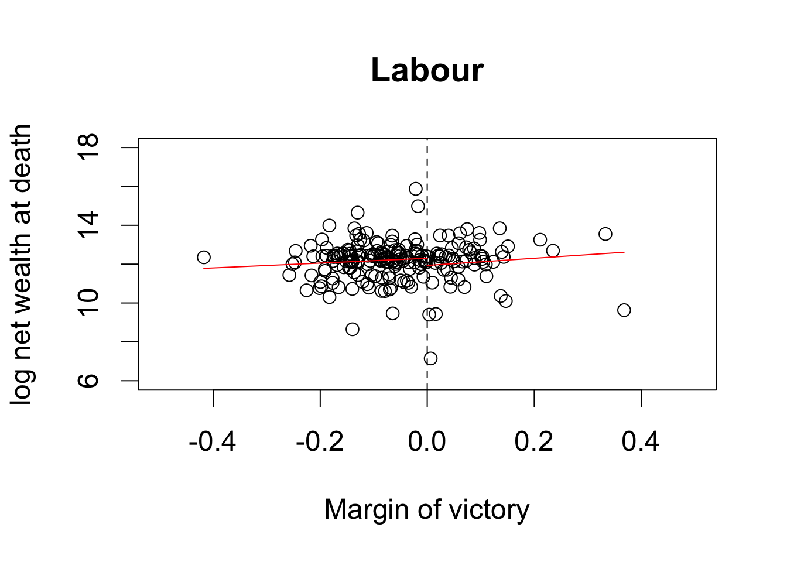
## scatterplot with regression lines for tory
plot(MPs.tory$margin, MPs.tory$ln.net, main = "Tory", xlim = c(-0.5, 0.5),
ylim = c(6, 18), xlab = "Margin of victory",
ylab = "log net wealth at death")
abline(v = 0, lty = "dashed")
## add regression lines
lines(y1t.range, y1.tory, col = "red")
lines(y2t.range, y2.tory, col = "red")
## average net wealth for Tory MP
tory.MP <- exp(y2.tory[1])
tory.MP## 1
## 533813.5## average net wealth for Tory non-MP
tory.nonMP <- exp(y1.tory[2])
tory.nonMP## 2
## 278762.5## causal effect in pounds
tory.MP - tory.nonMP## 1
## 255050.9## two regressions for Tory: negative and positive margin
tory.fit3 <- lm(margin.pre ~ margin, data = MPs.tory[MPs.tory$margin < 0, ])
tory.fit4 <- lm(margin.pre ~ margin, data = MPs.tory[MPs.tory$margin > 0, ])
## the difference between two intercepts is the estimated effect
coef(tory.fit4)[1] - coef(tory.fit3)[1]## (Intercept)
## -0.01725578